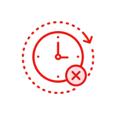

アドアフィリエイト関係者から、大絶賛。
記事LP・スワイプLP・アンケートLPの制作・改善ツール
使いにくいLPツール、 まだ使いますか？
アドアフィ運用者の乗り換え、増えてます
アドアフィ関係者のためのオールインワンLPツール。
いま他社ツールで公開中のLPも、そのまま移せます。
- 有名ツールより低価格 月30,000円〜
-
人数が増えても定額
ユーザー数
実質無制限 -
稼働中のLPも対象
移行サポート
無料
費用はかかりません。しつこい営業はしません。
※表示価格はすべて税別・各プランの最低価格です。ご利用状況（PV・サイト規模）に応じた従量課金です。
※無料トライアルの期間・適用条件は商談時にご説明します。
アドアフィ運用者の方！
記事LP運用で、こんな悩みはないですか？
乗り換えたい理由ははっきりしているのに、動けない。多くの場合、原因は次の3つに集約されます。
-
01
そもそも、使いにくい
テンプレートが多すぎて選べない。使いこなせる人が社内に限られる。ABテストとヒートマップが別ツールに分かれていて、見比べるだけで時間が溶ける。配信エラーが起きてもサポートの反応が遅い。
-
02
思ったより費用が膨らむ
アカウント数で課金されるため、人を増やすと月額が上がる。かといって権限を絞ると、確認や修正の待ちが発生して現場が回らない。結局、来月いくらになるのかが読めない。
-
03

乗り換えたいが、動けない
移行にどれだけ工数がかかるか読めない。稼働中のLPは止められない。そもそも今の契約期間がまだ残っている。「いつかやる」のまま、判断が先送りになっている。
いまのLP制作／改善の課題を、まとめて解決するツール。
それが、Dejam です。
Dejamの記事LP制作機能の特徴
Dejamの記事LP制作機能だと
コンバージョンを増やす機能が無料でついてくる
-

無料で離脱防止
ポップアップ -

無料で画像/動画
が高画質 -

無料でヒートマップ
-

無料で表示速度改善
-

無料でABテスト
業界のリーダーが乗り換える、記事LP制作ツールならDejam。


LP制作機能で
おすすめの3種類のLP
-

通常のLP
画像や本文、ボタンなどをノーコードで編集してLPを作成できます。
-
画像のLP
広告配信用に画像で制作するLPを作成できます。
-

記事LP
クッションLPや記事LPと言われるブログ記事風のLPを作成できます
LP制作機能の操作イメージ
-
クラシックエディタ
-
ブロックエディタ
-
レポート

ドラッグ＆ドロップで簡単に制作・作成
CTAボタンやお悩みに解決ブロックなど、LP制作・作成に欠かせない要素をカテゴリ別に豊富にご用意。画像やテキストを自由にカスタマイズするだけで、高品質なLPを手軽に制作・作成できます。

コンテンツの編集も微調整が可能
コードを書かずに、見出し・テキスト・画像の各要素の、サイズや余白を自由に調整可能。前後左右の間隔も、カスタマイズできます。
動画で見る記事LP制作機能
-
記事LP制作機能の紹介
-
【5分で解説】LP機能の差別化ポイント
-
LP制作機能｜ノーコードでサイト改善を実現するDejam
LP制作から分析、改善まで一気通貫したサイト改善を実現
Webマーケティングにおいて、ランディングページ（LP）は顧客との最初の接点となる重要な要素です。しかし、効果的なLPを制作し、常に改善し続けるには、専門的な知識やコーディングスキル、忍耐力が必要とされてきました。 Dejamは、そんな悩みを解決するために開発されたノーコードでLP制作から改善までを実現する総合型Webサイト改善ツールです。LP制作からサイト分析、ABテスト、改善案の検討まで、サイト改善に必要なすべての機能を1つのプラットフォームに集約しています。
-
DejamのLP制作機能の特徴
-
1. ノーコードで簡単にLPを改善・制作
DejamのLP制作機能では、プログラミングの知識がなくても、直感的な操作で簡単にランディングページの制作・改善ができます。すべての変更はリアルタイムでプレビュー可能なので、完成イメージを確認しながら作業できます。
- テキスト編集：キャッチコピーやコンテンツの文言を即座に変更
- 要素の削除・追加：不要な要素の削除や、ボタン・見出し・画像などの追加が可能
- 画像の変更：視覚的要素を簡単に入れ替え
- レイアウト調整：ドラッグ&ドロップで要素の配置を調整
-
2. AIアシスタントによるキャッチコピー生成
Dejamには、コンバージョン率を高めるキャッチコピーを自動で生成するAIアシスタント機能を搭載。マーケティング効果を高める文言のアイデアに悩むことなく、最適なコピーを選び出すことができます。
- クリック率を高めるキャッチコピー
- 顧客の課題解決を訴求する文言
- 商品・サービスの特徴を簡潔に伝えるフレーズ
-
3. 記事LP制作にも対応した多様な編集機能
商品説明だけでなく、ユーザーの興味関心を引き立てる記事LPの制作・改善にも最適です。
- CTAボタンの効果的な配置
- コンテンツの追加・変更
- 表組みやリストの挿入
- 簡単にアニメーション効果を付与
-
4. コードエディタ機能で高度なカスタマイズも可能
より複雑な改善を実現したいプロフェッショナル向けに、コードエディタ機能も用意しています。JavaScriptを書き込むことで、ノーコードでは実現できない以下のような機能も実装可能です。
- 追従型CTAボタンの実装
- 要素の順番入れ替え
- 離脱防止ポップアップの表示制御
- 高度なアニメーション効果
-
-
LP制作と分析を一気通貫で実現
-
制作から分析までシームレスな連携
Dejamの最大の強みは、LP制作だけでなく、制作したLPの成果をすぐに分析できる点です。
- ヒートマップ分析：ユーザーの行動を視覚的に把握
- クリックイベント分析：ボタンやリンクのクリック率を測定
- コンバージョン計測：目標達成率を正確に把握※クロスドメイントラッキングにも対応
-
ABテストでさらなる改善
制作したLPのバリエーションを作成し、ABテストを実施することで、どのデザインや文言がより効果的かを検証できます。
- 要素変更テスト：ボタンの色や文言など、特定要素の効果を検証
- ポップアップテスト：離脱防止や特典告知のポップアップ効果を測定
- リダイレクトテスト：完全に異なるデザインの比較検証が可能
-
-
DejamのLP制作機能ならではのメリット
-
マーケターの生産性向上
- デザイナーやエンジニアに依頼せずにLPの改善が可能
- アイデアをすぐに形にして検証できるスピード感
- 複数ページの一括管理でブランドの一貫性を維持
-
チーム全体でナレッジ共有
- 改善活動の履歴がすべて記録され、チーム内で共有可能
- 成功事例をテンプレート化して横展開
- PDCAサイクルを高速で回せる環境の構築
-
コスト削減と投資対効果の最大化
- 外部への制作発注コストの削減
- 複数ツールの導入・運用コストの一元化
- データに基づく改善で広告費用対効果の向上
-
-
LP制作完全ガイド：効果的なランディングページの作り方
ランディングページ（LP）とは？基本と重要性
ランディングページ（LP）とは、Web広告やメールマーケティングなどから流入したユーザーが「最初に訪れるページ」のことです。名前の通り、ユーザーが「着地（landing）」する場所として設計され、特定の商品・サービスの申し込みや資料請求といった明確なコンバージョン（成果）を促すことを目的としています。 LPは企業のWebマーケティング戦略において重要な役割を果たします。通常のWebサイトとは異なり、ユーザーの注意を分散させる要素を最小限に抑え、CV到達に焦点を当てた設計が特徴です。
-
LP制作が重要な理由
- コンバージョン率の向上：適切に制作されたLPは、通常のWebページと比較して5〜10倍のコンバージョン率を実現することも
- 広告効果の最大化：広告とLPの一貫性を保つことで、広告費用対効果を高める
- ターゲット層へのアプローチ：特定のユーザー層に合わせたメッセージを届けることが可能
- データ収集・分析の容易さ：単一目的のページで成果測定がしやすい
-
-
LP制作の基本ステップ
-
1. 目的とターゲットを明確にする
効果的なLPを制作するためには、まず何を達成したいのか（資料請求・商品購入・LINE登録など）と、誰に対して訴求するのかを明確にする必要があります。
- 明確なゴール設定：コンバージョンの定義を具体的に
- ターゲットペルソナの設定：年齢、性別、職業、課題、関心など
- CVまでの導線設計：ユーザーの心理プロセスをマッピング
-
2. 注目されるコンテンツを組み込む
LP制作において、以下の要素は特に重要です。
- インパクトのあるファーストビュー（FV）：ユーザーの注目を集め、ベネフィットを簡潔に伝える
- 説得力のあるコピー：主要なメッセージを補足し、ユーザーが自分ごと化しやすくする
- プロダクト/サービスの明確な説明：特徴ではなく、ユーザーが得られるメリットを強調
- 社会的証明：顧客の声、事例、メディア掲載実績
- 信頼の構築：保証、セキュリティ証明、権威性のある第三者からの推薦
- 明確なCTA（Call to Action）：目立つボタンで次のアクションを明示
- 魅力的なビジュアル：商品やサービスを効果的に伝える画像・動画
-
3. モバイルファーストでデザインする
現在、Webトラフィックの過半数はモバイルデバイスからのアクセスです。LP制作においてモバイル対応は必須条件です。
- 読みやすいフォントサイズ：モバイルでも読みやすい16px以上を推奨
- レスポンシブデザイン：あらゆる画面サイズに最適化
- タップしやすいボタン：最低44×44ピクセル以上のサイズ
- ページ読み込み速度の最適化：画像圧縮やコード最適化で3秒以内の表示を目指す
-
-
記事LP コンテンツマーケティングのための新たなアプローチ
-
通常のLPと記事LPの違い
記事LPは、従来の商品・サービス訴求型LPとは異なり、有益な情報を提供することでユーザーの興味関心を向上させ、短期でCV到達を目指すアプローチです。
-
記事LP制作のポイント
- 価値ある情報の提供：専門的知見や独自調査データの活用
- ストーリーテリング：ユーザーが共感できる設計
- 適切なCTAの配置：情報提供と自然な流れでのCVへの誘導
-
-
LP制作後の継続的改善
LP制作はローンチして終わりではありません。継続的なサイト分析を通じて改善を続けることが、成果を出すコツです。
-
LP制作におけるサイト分析の役割
- ユーザー行動の可視化：どこで躓き、どこに興味を示しているかを把握
- 問題点の特定：コンバージョンを妨げる要因を発見
- 仮説検証：改善案の効果を定量的に測定
- 競合分析：業界内での自社LPの位置づけを把握
-
効果的なサイト分析手法
- ヒートマップ：クリック・スクロール・熱読・離脱マップでユーザー行動を視覚化
- フォーム分析：離脱率の高いフォーム項目を特定
- ファネル分析：コンバージョンまでの過程での離脱ポイントを特定
-
サイト分析から得られる考察
- 注目を集める要素：どの見出しやビジュアルが最も閲覧されているか
- スクロール深度：コンテンツのどこまでユーザーが到達しているか
- 滞在時間：各セクションにどれだけ時間を費やしているか
- CTAのクリック率：どのCTAが最も効果的か
- デバイス別の挙動の違い：PC/SPでのユーザー行動の差異
-
-
アクセス解析でLPの成果を最大化する方法
サイト分析の中でも特に重要なのがアクセス解析です。LP制作の成果を測定し、継続的に最適化するための基盤となります。
-
LP制作に関連する主要な指標
- コンバージョン率(CVR)：訪問者のうち、目標を達成した割合
- 直帰率：1ページだけを見て離脱した訪問者の割合
- 平均滞在時間：ユーザーがページに留まった平均時間
- 流入経路：どの広告やチャネルからの訪問者が最も成果につながるか
- デバイス別パフォーマンス：PC/SP/タブレット別の成果
- コスト効率：広告費用対効果(ROAS)や顧客獲得コスト(CAC)
-
アクセス解析データの活用方法
- セグメント分析：特定の条件（デバイス・流入元・リピーター等）でのパフォーマンス比較
- ABテスト設計：データに基づいた仮説立案と検証
- 投資判断：成果の高い広告媒体・キーワードへの予算配分
- コンテンツ最適化：高パフォーマンスコンテンツの特定と強化
-
-
LP制作のトレンド
LP制作は常に進化しています。最新のトレンドを把握し、取り入れることで競合との差別化を図りましょう。
-
2025年のLP制作トレンド
- 問いかけコンテンツ: アンケート、チャットボット、シミュレーションなどの双方向要素
- パーソナライゼーション：訪問者の属性や行動履歴に応じたコンテンツ表示
- 動画中心のLP：テキストよりも動画での訴求が増加
-
AI技術のLP制作への活用
- AIを活用したコピーライティング：効果的な見出しやCTAの生成
- レイアウト自動最適化：ユーザー行動に基づく自動的なデザイン調整
- 予測分析：将来のパフォーマンスを予測した事前改善
- 画像認識：マルチメディアコンテンツからのインサイト抽出
-
-
実践 効果的なLP制作のためのチェックリスト
-
LP制作前の準備
- ターゲットペルソナと課題の明確化
- 競合分析の実施
- コンバージョンポイントの定義
- カスタマージャーニーの作成
-
デザイン・コンテンツ制作
- 魅力的なFVの作成
- ベネフィット中心の訴求ポイント整理
- 適切な画像・動画素材の準備
- 明確なCTAの設計
- モバイル表示の最適化
- ページ表示速度の確認
-
公開後のチェック
- 各種アナリティクスツールの設定
- ABテスト計画の立案
- ヒートマップ分析の実施
- 顧客の声（UGC）の収集
- コンバージョン率（CVR）の定期チェック
- 競合サイトの継続的モニタリング
-
-
まとめ 成功するLP制作のコツ
LP制作は、単なるページデザインではなく、戦略的なマーケティング活動の一環です。ユーザーの課題解決を中心に据え、明確な目的を持ち、データに基づく継続的な改善を行うことが成功の鍵です。
記事LPであれば情報価値の高さを、商品訴求型LPであれば明確なベネフィットを前面に出し、徹底したサイト分析とアクセス解析によって常に改善することが重要です。 最新のトレンドや技術を取り入れながらも、「ユーザーにとって何が価値があるか」という原点に立ち返ることを忘れないでください。効果的なLP制作は、一度きりのプロジェクトではなく、継続的な改善活動です。
LP制作でできること（機能アップデート）
SP表示の横幅を機種によらず正確に100%表示
クラシックエディタで作成したページは、SPモードで横幅100%を指定すると、画面幅によらず正確に余白なく表示されます。端末ごとの表示崩れを気にせず、狙い通りのレイアウトでLPを公開できます。
エディタ内のAIチャットで制作を補助
記事LPのエディタ内からAIチャットをそのまま利用できます。外部のAIツールへ移動することなく、文章作成や改善の相談をしながらLP制作を進められます。
その他のアップデート（5件）▾
LPごとの独自ドメイン設定
LP単位で独自ドメインを設定できます。1つのプロジェクト内で複数の独自ドメインを使い分けながら、ブランドや案件ごとに最適なURLでLPを公開・運用できます。
豊富なウィジェットでノーコード制作
カルーセルやアコーディオン、口コミ、吹き出し、矢印など多彩なウィジェットを組み合わせて、コードを書かずに訴求力の高いLPを制作できます。テンプレートから配置するだけでリッチな表現を実現します。
URLを変えずにABテストへ活用
制作したLPを、URLを変更せずにそのままABテストにかけられます。作ったページで即座にパターン検証を始められ、制作から改善までを止めずに回せます。
用途で選べる3つのエディタ（クラシック/ブロック/フォーム）
目的や担当者のスキルに応じて、クラシックエディタ・ブロックエディタ・フォームエディタを使い分けてLPを制作できます。ノーコードで、記事LPからフォームまで1つのツールで作成できます。
レスポンシブ／デバイス別の表示設計
レスポンシブ型・デバイス独立型・スマートフォン特化型から表示方式を選んでLPを制作できます。PCとスマホで最適なレイアウトを作り分け、デバイスごとのCVRを高められます。
記事LPに関するよくある質問
よくある質問
-

記事LPとはどのようなページですか？

記事LPとは、記事コンテンツの形式で作られたランディングページのことです。ユーザーの悩みや課題を解決する情報を提供しながら、自然な流れで商品やサービスの紹介につなげるマーケティング手法として活用されています。広告色を抑えた構成にすることで、ユーザーに読まれやすい特徴があります。
-
記事LPと通常のLPの違いは何ですか？
通常のLPは商品のメリットや特徴を直接訴求するセールス型のページが多いのに対し、記事LPは記事コンテンツとしてユーザーの悩みや体験談などを紹介しながら商品を提案します。そのため広告感が少なく、情報収集段階のユーザーにも受け入れられやすい点が特徴です。
-
記事LPはどのような業界で使われていますか？
記事LPは美容・健康食品・EC・サブスクリプションサービスなど、幅広い業界で活用されています。特に広告運用やアフィリエイトマーケティングでは、ユーザーの共感を得ながら商品を紹介できるため、多くの企業が記事LPを活用しています。
-
記事LPのメリットは何ですか？
記事LPのメリットは、広告感を抑えながら商品やサービスを紹介できる点です。ストーリー形式のコンテンツによってユーザーの理解や共感を得やすく、結果としてコンバージョン率の向上につながることがあります。また、情報コンテンツとしてSNSや検索エンジンからの流入とも相性が良い特徴があります。
-
記事LPのデメリットはありますか？
記事LPはコンテンツ量が多くなる傾向があるため、制作に時間やコストがかかる場合があります。また、ストーリー設計や構成が不十分だとユーザーが途中で離脱してしまう可能性もあるため、ユーザーの心理に沿ったコンテンツ設計が重要になります。
-
記事LPの構成はどのように作ればよいですか？
一般的な記事LPは「悩みへの共感」「問題提起」「原因の説明」「解決策の提示」「商品紹介」「CTA」といった流れで構成されます。ユーザーの悩みに寄り添うストーリーを作ることで、自然な形で商品やサービスへの興味を高めることができます。
-
記事LPは広告と相性が良いですか？
記事LPは広告との相性が良いマーケティング手法として知られています。広告から直接セールスページへ誘導するよりも、記事形式のコンテンツを挟むことでユーザーの理解が深まり、コンバージョンにつながりやすくなるケースがあります。
-
記事LPはSEOでも活用できますか？
記事LPは広告施策で使われることが多いですが、検索ユーザーのニーズに合わせたコンテンツを作ることでSEO流入を獲得することも可能です。記事形式のコンテンツは検索エンジンから評価されやすく、適切なキーワード設計を行うことで検索流入を増やすことができます。
-
記事LPのコンバージョン率はどれくらいですか？
記事LPのコンバージョン率は業界や商材、流入チャネルによって異なりますが、ユーザーの理解を深めながら商品を紹介できるため、通常のLPよりも高い成果につながるケースもあります。ABテストやデータ分析を行いながら継続的に改善することが重要です。
-
記事LPはどのように改善すればよいですか？
記事LPの改善には、ユーザー行動の分析やABテストの実施が重要です。ヒートマップなどの分析ツールを活用することで、どこでユーザーが離脱しているかを把握し、コンテンツやCTAの配置を改善することでコンバージョン率の向上につなげることができます。
-
記事LPは自社で作ることはできますか？
記事LPはHTMLやデザインの知識があれば自社で制作することも可能です。しかし、制作や改善を効率的に行うためには、LP作成ツールやマーケティングツールを活用することで運用をスムーズに進めることができます。
-
記事LPを効率的に制作する方法はありますか？
記事LPを効率よく制作するためには、LP作成機能やABテスト機能などを備えたツールを活用する方法があります。ツールを利用することで制作スピードを高めるだけでなく、公開後の改善や分析も効率的に行うことができます。
-
記事LPとクッションページは同じものですか？
記事LPとクッションページは似た役割を持つことがありますが、厳密には異なる場合があります。クッションページはユーザーを別のページへ誘導する目的で作られる中間ページであり、記事LPは記事コンテンツを通じて商品やサービスの理解を深めながらコンバージョンにつなげるページです。
-
記事LPの文字数はどれくらいが適切ですか？
記事LPの文字数は商材や構成によって異なりますが、一般的には2000〜6000文字程度のコンテンツになることが多いです。ユーザーの悩みや課題をしっかりと説明しながら、商品やサービスの価値を伝える構成が重要になります。
-
記事LPはスマートフォンでも効果がありますか？
多くのユーザーがスマートフォンからコンテンツを閲覧するため、記事LPもスマートフォンで読みやすい設計にすることが重要です。文字サイズや画像配置、CTAボタンの位置などを最適化することで、スマートフォンユーザーのコンバージョン率を高めることができます。
-
記事LPはABテストを行うべきですか？
記事LPはコンテンツの構成やCTAの位置によって成果が大きく変わるため、ABテストを行いながら改善することが重要です。見出しや画像、CTAのデザインなどをテストすることで、より高いコンバージョン率を目指すことができます。
-
Dejamで制作したLPはどこに公開されますか？
自社ドメインで公開できます。サーバー不要でDejam上から直接公開でき、ドメイン登録数は300件まで無料です。独自ドメインの設定にも対応しています。
-
プログラミング知識がなくてもLPを制作できますか？
はい。ドラッグ＆ドロップのノーコードエディターで画像・テキスト・ボタンを自由に配置できます。上級者向けにコードエディターへの切り替えも可能なため、デザイナーや開発者も同じツールで制作できます。
-
LP制作後にABテストやヒートマップ分析はすぐに使えますか？
はい、Dejamで制作したLPにはABテスト・ヒートマップ・離脱防止ポップアップが追加費用なしで付属しています。公開と同時に分析・改善サイクルを開始できます。
-
LP制作の料金はどのくらいかかりますか？
トライアルプランは月5万円（月間10万PV）から、スターター月12万円、スタンダード月27万円、グロース月40万円のプランをご用意しています。14日間の無料トライアルもご利用いただけます。
-
既存のLPをDejamに移行することはできますか？
はい、既存のHTMLをDejamにインポートして引き続き編集・運用することが可能です。また、既存サイトにタグを設置するだけでヒートマップ・ABテストのみを導入するかたちでの活用もできます。
関連記事
記事LPは効果ない・怪しいは本当？失敗する理由と改善策を徹底解説
記事LPは効果ない・怪しいは本当？失敗する理由と改善策を徹底解説
【2026年版】ノーコードLPのデメリット7選｜「作っても意味ない」の正体を徹底解説
【2026年版】ノーコードLPのデメリット7選｜「作っても意味ない」の正体を徹底解説
【2026年版】アンケートLPとは？仕組み・CVRが高い理由・作り方を徹底解説
【2026年版】アンケートLPとは？仕組み・CVRが高い理由・作り方を徹底解説
【2026年最新】ChatGPTでLPを改善する方法｜コピー改善・ABテスト仮説・CVR向上の実践手順
【2026年最新】ChatGPTでLPを改善する方法｜コピー改善・ABテスト仮説・CVR向上の実践手順
【2026年最新】生成AIでLP制作を効率化する方法｜ChatGPT・Claude活用から実装まで解説
【2026年最新】生成AIでLP制作を効率化する方法｜ChatGPT・Claude活用から実装まで解説
【2026年最新】ChatGPTでLPを作る方法｜構成・コピー・実装まで手順を徹底解説
【2026年最新】ChatGPTでLPを作る方法｜構成・コピー・実装まで手順を徹底解説
関連するお役立ち資料
 総合通販サイト10社のWEBサイトCVR改善案を40件考えてみた総合通販サイトCVR改善事例40選総合通販会社CVR改善事例集を作成してわかったこと ほとんどのWebサイトでは基礎的な改善ポイントが見つかった ex.不要な高さを取っている、CTAボタンを設置していないなど 共通… 無料ダウンロード
総合通販サイト10社のWEBサイトCVR改善案を40件考えてみた総合通販サイトCVR改善事例40選総合通販会社CVR改善事例集を作成してわかったこと ほとんどのWebサイトでは基礎的な改善ポイントが見つかった ex.不要な高さを取っている、CTAボタンを設置していないなど 共通… 無料ダウンロード
 【2024年版】LPO（サイト改善）ツール最新カオスマップを公開カオスマップ作成の背景 近年、LPの最適化はWebマーケティングや広告運用において、CVR改善・PDCA高速化のために必要不可欠なプロセスとなっています。 しかし、その最適化プロセ… 無料ダウンロード
【2024年版】LPO（サイト改善）ツール最新カオスマップを公開カオスマップ作成の背景 近年、LPの最適化はWebマーケティングや広告運用において、CVR改善・PDCA高速化のために必要不可欠なプロセスとなっています。 しかし、その最適化プロセ… 無料ダウンロード 【登壇資料公開】BtoBマーケター必見！CROの定石と裏技を大公開！▼登壇資料抜粋はこちら▼ B2Bサイトでは、費用対効果や苦労対効果の問題で実施が後回しされがち、 しかしアクションをしないと永遠に機会損失をします。 ↓ 定石パート 1.簡単でもい… 無料ダウンロード
【登壇資料公開】BtoBマーケター必見！CROの定石と裏技を大公開！▼登壇資料抜粋はこちら▼ B2Bサイトでは、費用対効果や苦労対効果の問題で実施が後回しされがち、 しかしアクションをしないと永遠に機会損失をします。 ↓ 定石パート 1.簡単でもい… 無料ダウンロード
FUNCTIONS